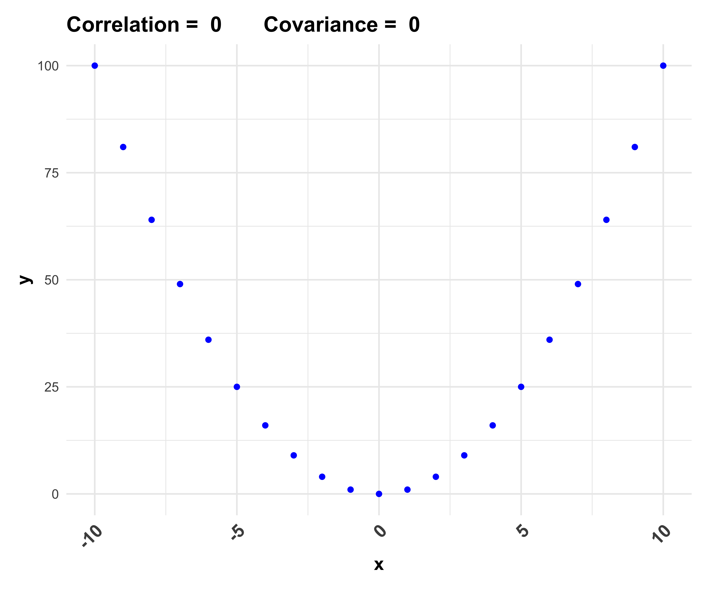
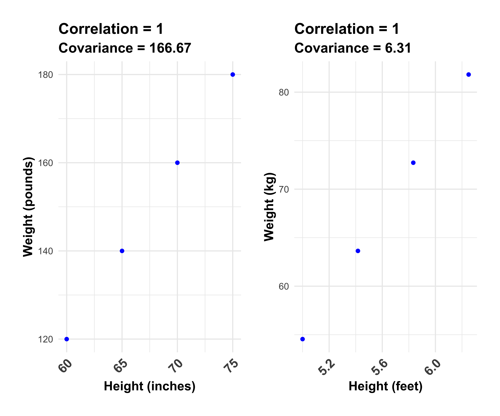
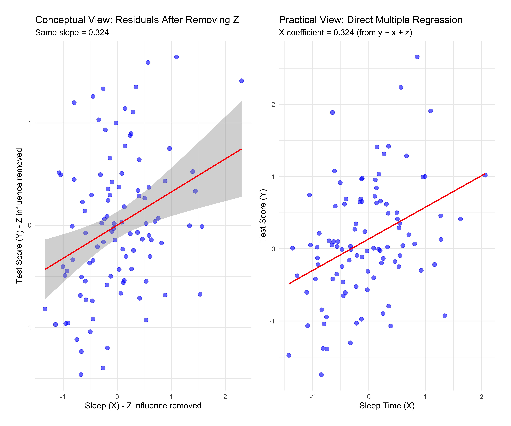
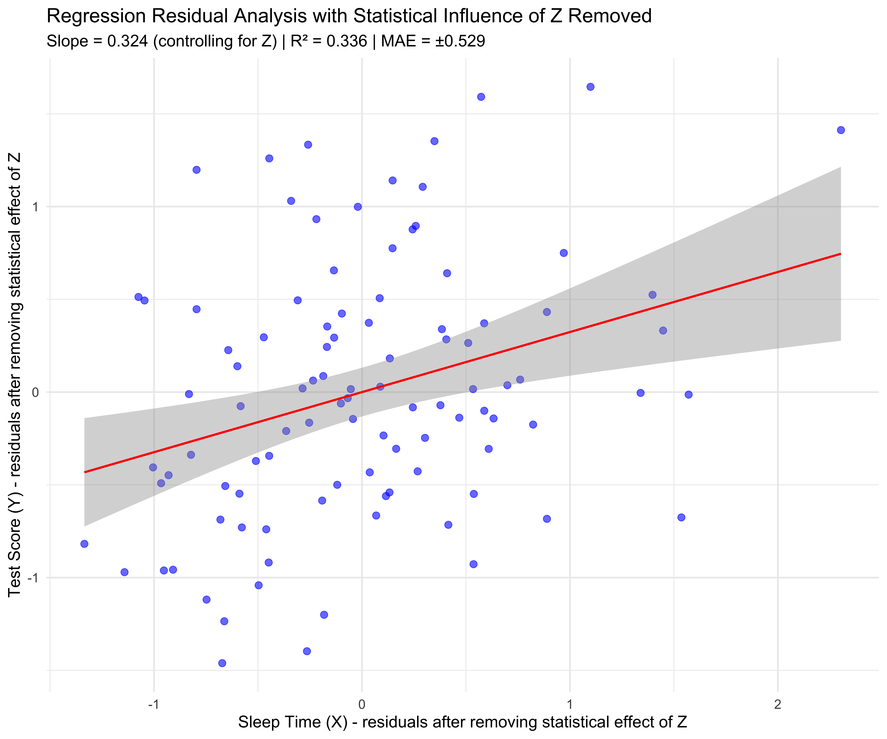
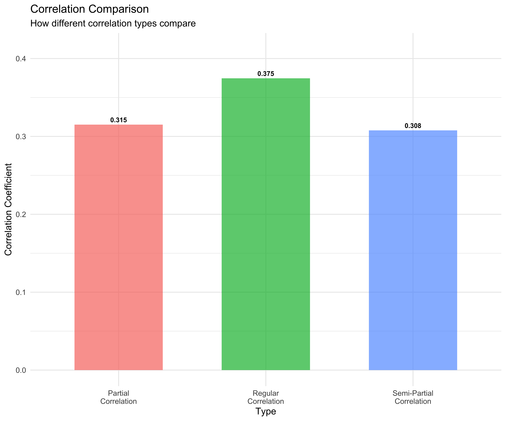

Honest Analysis of Variables that Co-Vary
Terminology
In statistical analysis, I use ‘co-vary’ when you might use the word ‘correlated’, ‘related’ or ‘associated’.
Avoid Confusing Jargon
Like it or not, the jargon invented by statisticians such as “association”, “relationship”, “correlation”, “explains”, and even “accounts for” have very strong implications of causation, even when no causation between the variables is present.
“Co-vary” conveys only that variables in the specific data examined change values in a more or less predictable manner, whatever the reasons (known or unknown). The more restricted the data examined, the less applicable the predictions are to other situations.
Reserves “correlation” and “covariance” for their respective mathematical computations and interpretations for technical explanations directed at scientists.
Address Statistical Questions in a Neutral, Honest Way
Assessing Existence: “Do these variables co-vary?”
Assessing Direction: “Height and weight co-vary positively”
Assessing Functional Form : “These variables co-vary along a straight line”
Assessing Functional Form: “These variables co-vary along a curve”
Assessing Functional Form: “X and Y² co-vary along a parabola”
Technical analysis: “The covariance is positive, indicating they co-vary along a line and in the same direction.”
Technical analysis: “These variables co-vary, but their covariance is zero because the relationship isn’t linear.”
The function below has perfect predictability, but zero correlation or covariance
Scaling
The covariance statistic alone will not reveal the relative magnitude of how much they co-vary. Even when the correlation is identical in two scenario, one calculation of the covariance can be much larger than the other, depending on the scale of measurement (e.g., inches vs feet, pounds vs kg). This is because covariance statistics are entirely dependent on the units of measurement.
Correlation statistics, on the other hand, reveal relative magnitudes. This, of course, is the great advantage of standardizing any measure.
Example: These variables co-vary along a line (linear). Using the covariance statistic alone we can know the direction, but we cannot determine the relative magnitude. The magnitude of the covariances is revealed by using the correlation statistic, which is the STANDARDIZED covariance.
Plots show identical lines, but with they are measured on different scales

Take Aways
Covariance: Raw, non-standardized measure reflecting the scale used
Correlation: standardized covariance (unitless measure)
Causal Language?
“The relationship suggests X causes Y” (WRONG!, unless you have postulated the causal theory, protocols and procedures in advance and completed further analysis to support a causal inference)
“The relationship may suggest that X causes Y” (STILL WRONG, unless you have postulated the causal theory, protocols and procedures in advance and completed further analysis to support a causal inference)
“X co-varies with Y along a line, and the slope is positive” (HONEST)
“No causal inference can be made from this correlational analysis alone.” (HONEST, unless you have simulated an experimental study when controlling for variables)
Understanding the Phrase “Controlling for” with Variables
In analysis, when we talk about “controlling for” a variable we’re trying to understand the nature of the covariance between two (or more) variables by removing the statistical influence of one or more other variables. (Note: a statistical influence alone is NOT evidence of a causal influence)
This helps determine how much of an observed statistical covariance is direct, or whether it is also statistically influenced by other factors.
Conceptual Example
Imagine analyzing the covariance between ice cream sales and drowning deaths. Although these variables show a very strong positive statistical correlation, ice cream sales do NOT cause drownings. A third variable (summer temperature) statistically influences both and this type of variable can ‘fool’ us.
What we can say:
- Ice cream sales and drownings co-vary along a line, with positive slope.
Here is a chart using synthetic data. It shows perfect correlation (1.0) and a ‘high’ covariance because ice cream sales are in dollars, and drownings are in individuals.
Adding temperature as an statistical influence:
Higher temperatures (Z) → More ice cream sales (X)
Higher temperatures (Z) → More swimming → More drowning incidents (Y)
By “controlling for” the statistical effect of temperature, we can see a covariance between ice cream (X) and drownings (Y) after removing the statistical influence of temperature (Z), (but not that of swimming).
Other Methods to Assess the Statistical Influence of Variables on Each Other
Examine Partial Correlation Between 3 Variables Using R Stats Functions Only
Partial correlation measures the covariance between two variables while removing the statistical influences of others (‘controlling for’).
Consider this DAG:

Now, compare the regular correlations and the partial correlation
Regular correlation of Sleep and Test Score: 0.375 Regular correlation of Study Time and Test Score: 0.513 Partial correlation of Sleep and Test Score (controlling for statistical influence of Study Time): 0.315 The difference between regular correlation and partial correlation can be important, depending on the magnitude and practical implications of the statistical influences observed (see below).
Regular Correlation vs. Partial Correlation
Regular correlation (0.375) measures the total linear covariance between Sleep Time (X) and Test Score (Y) without removing the statistical influence of any other variables. It answers: “How strongly do Sleep Time (X) and Test Scores (Y) co-vary, including the statistical influences of other known and unknown variables (with no controls)?”
Partial correlation (0.315) measures the co-variation between Sleep Time (X) and Test Score (Y) after removing the statistical influence of Study Time (Z). It answers: “How strongly do Sleep Time (X) and Test Score (Y) co-vary after removing the statistical influence of Study Time (Z) on both variables?”
In this example, the correlation dropped from 0.375 to 0.315 when controlling for the statistical influence of Study Time (Z). This indicates that:
A measurable portion of the original X-Y covariance was actually due to Z’s statistical influence on both variables.
About 84% (0.315/0.375 = 0.61) of the original correlation strength remains when the statistical influence of Z was taken into account (controlled for).
There is still a measurable covariance between X and Y (0.315) that exists independently of Z.
There are other tests you can apply to determine the statistical significance, AND the practical significance. Both are equally important (see below).
This is similar to comparing the R² from a simple model versus looking at the specific coefficient for X in a multiple regression model .
This is similar to comparing the R² from a simple model where Y is predicted by X alone (Y ~ X) versus looking at the specific coefficient for X in a multiple regression model where Y is predicted by both X and Z together (Y ~ X + Z).
In practical terms:
Y ~ X: “How well does X alone predict Y?” Y ~ X + Z: “How well does X predict Y when we also account for Z’s statistical influence?”
The comparison shows how much X’s apparent predictive power changes when you control for Z.
Using Linear Regression Models to Analyze Predictability Between 3 Variables
Linear regression ALSO allows you to examine covariance while statistically adjusting for other variables.
Using the same data, and the same DAG, we see that:

Simple Regression - Sleep coefficient: 0.438 | R² = 0.14 | MAE = ± 0.589 Multiple Regression - Sleep coefficient: 0.324 (controlling for Study Time) | R² = 0.336 | MAE = ± 0.529 Simple Regression - Sleep coefficient: 0.375 | R² = 14 | MAE = ± 0.589 

The coefficient for X in model2 represents the covariance between X and Y AFTER removing the statistical statistical influence of Z (controlling for Z).
We specifically want the coefficient for X because it tells us:
“How much does Y change for each unit increase in X, when Z is held constant?”
Note: This X coefficient is mathematically equivalent to the partial correlation between X and Y (controlling for Z) that we calculated earlier.
Comparing Approaches
Partial Correlation:
Regular correlation: 0.513
Partial correlation (controlling for Z): 0.315
Linear Regression:
Simple Linear Regression coefficient for X (not controlling for Z): 0.438
Multiple Regression coefficient for X (controlling for Z): 0.324
The similarity in results is not coincidental.
These methods are mathematically related and represent different ways of approaching the same fundamental question: “What is the covariance between X and Y after accounting for the statistical influence of Z?”
Why They’re Similar
In standardized form (when variables are scaled to mean=0 and SD=1):
The standardized regression coefficient for X in a simple regression (Y ~ X) is equivalent to the correlation between X and Y
The standardized regression coefficient for X in a multiple regression (Y ~ X + Z) is equivalent to the partial correlation between X and Y controlling for Z
The slight numerical differences you see (0.513 vs 0.438 and 0.315 vs 0.324) are due to:
- The correlation coefficient being standardized by default
- The regression coefficients in your output not being standardized (they’re in the original units of measurement)
This demonstrates an important concept in R programming: there are often multiple ways to achieve the same analytical goal. The choice between using partial correlation and multiple regression might depend on:
- Your specific research question
- How you plan to interpret and communicate results
- Other analytical needs (e.g., if you need to control for many variables, regression might be more practical)
- Your disciplinary conventions (some fields prefer one approach over another)
For this particular scenario of controlling for a third variable, both approaches lead to the same conclusion: the covariance between X and Y is weaker (but still present) after accounting for Z’s statistical influence.
Residuals Method
You can extract residuals from a regression model to create ‘adjusted’ variables.
The residual method is mathematically equivalent to partial correlation. Here’s why they’re the same:
Why These Methods Are Equivalent
When you:
- Regress X on Z and get residuals (X_residuals)
- Regress Y on Z and get residuals (Y_residuals)
- Calculate the correlation between these residuals
You’re effectively measuring what’s “left over” in the X-Y covariance after removing Z’s statistical influence on both variables. This is precisely what partial correlation does.
In mathematical terms:
- X_residuals represent the part of X that cannot be predicted by Z
- Y_residuals represent the part of Y that cannot be predicted by Z
- Their correlation represents the covariance between X and Y that is independent of Z
Comparing All Three Methods
For controlling for Z in the X-Y covariance:
| Method | Result | Interpretation |
|---|---|---|
| Partial correlation | 0.315 | Direct calculation of X-Y covariance after removing Z’s statistical influence |
| Multiple regression | 0.324 | Coefficient of X when the statistical influence of Z is held constant |
| Residual correlation | 0.315 | Correlation between the parts of X and Y that do not co-vary with Z |
The slight difference in the regression coefficient (0.324) compared to the other methods (0.315) is due to scaling differences as mentioned before. If you were to standardize all variables before regression, the coefficient would match exactly.
Why This Matters
This equivalence across methods is powerful because:
- It gives you confidence in your results when different approaches yield the same answer
- It allows you to choose the method that best fits your workflow or communication needs
- It demonstrates the mathematical coherence of statistical theory
If you’re working with R, this also means you can choose the most computationally efficient or syntactically convenient method for your specific analysis without sacrificing accuracy.
Semi-partial Correlation
Semi-partial correlations measure unique contributions.
Semi-partial correlation: 0.308 
Correlation_Type Value
1 Regular 0.375
2 Partial 0.315
3 Semi-Partial 0.308
Interpretation R_squared
1 Total X-Y statistical influences 0.140
2 X-Y after removing statistical influence of Z from both 0.099
3 Unique X statistical influence on Y 0.095
Variance_Explained
1 14%
2 9.9%
3 9.5%The semi-partial correlation (0.308) is giving you a different and quite useful perspective compared to the partial correlation (0.315) we discussed earlier. Let me explain what this number is telling you:
Semi-Partial Correlation Procedure Explained
While partial correlation (0.315) measures the covariance between X and Y after removing Z’s statistical effect from both variables, semi-partial correlation (0.251) removes Z’s statistical effect from only one variable (typically X).
In this example, the semi-partial correlation of 0.308 represents:
- The correlation between X (with Z’s statistical statistical influence removed) and Y (with Z’s statistical statistical influence still present)
Think of it as answering: “What is the unique statistical statistical influence of X on the Y we observe, beyond what statistical influence Z contributes?”
Interpretation in Your Data
The semi-partial correlation (0.308) is smaller than the partial correlation (0.315), which is expected and tells you:
When you remove Z’s statistical effect from X but keep Y in its original form, the covariance between X and Y becomes weaker
The unique statistical influence of X to the variation observed in Y (after accounting for Z) is less than the covariance between the Z-adjusted versions of both variables Approximately 9.5% (0.308²) of the total variance in Y comes uniquely from the statistical influence of X, beyond the statistical influence of Z.
Practical Example to Understand This
Imagine a real-world scenario:
Y = Job performance X = Technical skills Z = Years of experience
The semi-partial correlation would tell you: “How much do technical skills uniquely statistical influence to job performance beyond what statistical influence is contributed by experience?”
This is particularly useful in regression contexts because the square of the semi-partial correlation tells you exactly how much R² would decrease if you removed X from a model that already contains Z.
Comparing All Four Methods
| Method | Result | Interpretation |
|---|---|---|
| Regular correlation | 0.565 | Total covariance between X and Y |
| Partial correlation | 0.315 | covariance between X and Y with Z’s statistical effect removed from both |
| Semi-partial correlation | 0.251 | Unique statistical influence of X to Y beyond the statistical influence of Z |
| Multiple regression coefficient | 0.324 | statistical effect of X on Y when Z is held constant |
The semi-partial correlation is particularly valuable in research contexts where you want to determine the unique contribution of specific predictors, especially when deciding which variables to include in a model.
covariances to Generative Equations
The correlation results observed directly relate to the equations used to generate the data. Let’s break down the connection:
Original Data-Generating Equations
Z <- rnorm(n) # Random variable Z x <- 0.6 * Z + rnorm(n, 0, 0.7) # X depends on Z with coefficient 0.6 y <- 0.5 * Z + 0.3 * x + rnorm(n, 0, 0.7) # Y depends on Z with coefficient 0.5 # and on X with coefficient 0.3
How This Relates to Our Results
| Method | Result | Relation to Data-Generating Equations |
|---|---|---|
| Regular correlation | 0.565 | This high correlation exists because: (1) X directly statistical influences Y (0.3 coefficient) AND (2) Z creates an indirect path between X and Y (0.6 * 0.5 = 0.3) |
| Partial correlation | 0.315 | Close to the true direct statistical effect of X on Y (0.3) in your equation since it removes Z’s statistical influence on both X and Y |
| Semi-partial correlation | 0.251 | Lower than 0.3 because it only removes Z’s statistical effect from X but not from Y |
| Multiple regression coefficient | 0.324 | Approximates the 0.3 coefficient you specified for X’s statistical effect on Y |
The Math Behind This
The equations describe a classic confounding scenario:
- Direct statistical effect: X → Y (coefficient = 0.3)
- Indirect statistical effect: X ← Z → Y (coefficients: Z→X = 0.6, Z→Y = 0.5)
- Total statistical effect: Direct + Indirect
The regular correlation captures both statistical effects. The partial correlation and regression coefficient try to isolate just the direct statistical effect, which is why they’re close to 0.3 (the true direct statistical effect).
The small differences from exactly 0.3 are due to random variation in the simulated data (we only have n=100 observations, and there’s random noise in each equation).
In causal inference terms, the data generating process created is a perfect example of confounding, where:
- Z is a confounder (statistically influences both X and Y)
- X has an observable statistical effect on Y of 0.3
- The total correlation between X and Y (0.565) overestimates the true causal effect due to confounding
- Controlling for Z brings us closer to the true causal effect
This demonstrates why controlling for variables is crucial for understanding true covariances in observational data. This simulation perfectly shows how controlling for Z helps to recover the true X→Y covariance (0.3) that is built into the data.
Why the Scatter Patterns Differ
Original Plot (X vs Y):
- Shows the raw covariance between X and Y
- Points are more spread out across a wider range of values
- The scatter includes both the direct X→Y covariance AND the indirect covariance through Z
- The pattern is statistical influenced by Z pulling points in particular directions
Residuals Plot (X_residuals vs Y_residuals):
- Shows only what’s left of X and Y after Z’s statistical influence is removed
- Points are more concentrated around zero (by definition of residuals)
- The scatter pattern represents only the direct X→Y covariance
- The overall variance is reduced because Z’s contribution has been removed
Why the Regression Lines Look Similar
The similarity in the regression lines (despite different scatter patterns) occurs because:
The Slope
First plot:
- The total covariance (direct + indirect)
- The slope of the residuals regression line approaches the true direct statistical effect of X on Y (around 0.3 in your data-generating equation), which is what the partial correlation also measures
- Linear covariance: Both plots are showing fundamentally the same underlying - linear covariance - just from different perspectives
Second plot:
Only the direct covariance (after Z is removed)
Direction:
- The direction of the covariance remains consistent even after removing Z’s statistical influence
An Analogy to Understand This
Think of it like comparing two photographs of the same mountain:
- The first photo shows the mountain with surrounding landscape (X, Y with Z’s statistical influence)
- The second photo shows just the mountain with background removed (X_residuals, Y_residuals)
The mountain’s basic shape (the regression line) is similar in both, but the context and spread around it (the scatter pattern) differs dramatically.
Technical Explanation
What you’re seeing is the essence of the Frisch-Waugh-Lovell theorem in econometrics: regressing residuals from one regression on residuals from another gives the same coefficient as the multiple regression would. The narrower spread in the residuals plot also shows why the partial correlation (0.315) is lower than the regular correlation (0.565) - there’s less shared variance after removing Z’s contribution.
Visual Demonstration
Let’s visualize how controlling for a variable works:
Practical Example: Education, Income and Experience
Let’s look at a more concrete example: the covariance between education and income, controlling for years of experience.
Regular correlation (education-income): 0.885 Partial correlation (controlling for experience): 0.569 Estimate Std. Error
9238.2771 399.3233 Estimate Std. Error
4885.4219 582.8745 Interpretation
When we control for a variable:
- If the correlation weakens substantially, the control variable contributes much of the original covariance
- If the correlation remains strong, the covariance exists independently of the control variable
- If the correlation changes direction, we may have uncovered a suppression statistical effect
Practical Tips
- Always consider potential confounding variables in your analysis
- Controlling for too many variables can lead to over-fitting
- Correlation (even partial) does not imply causation
- Consider using directed acyclic graphs (DAGs) to identify which variables to control for
# If using DAGs for causal inference
# install.packages("ggdag")
library(ggdag)
set.seed(1234)
dag <- dagify(
Y ~ X + Z,
X ~ Z,
exposure = "X",
outcome = "Y"
)
ggdag(dag) + theme_dag()Evaluating Your Controlled Model’s Practical Value
After controlling for confounding variables, you need to assess whether your model is practically useful for decision-making. This is where Residual Standard Error (RSE) and Mean Absolute Error (MAE) become crucial - they tell you about the size of your prediction errors in real-world units.
Understanding Prediction Error Metrics
R² tells you about relative improvement (how much variance you can predict), but RSE and MAE tell you about absolute accuracy (how wrong your predictions typically are).
Think of it this way: - R² = 0.36: “I can predict 36% of the variation” - RSE = ±15 points: “My predictions are typically off by about 15 points” - MAE = 12 points: “On average, I’m wrong by 12 points”
Residual Standard Error (RSE)
RSE estimates the typical size of your prediction errors in the original units of your outcome variable.
R² = 0.86 RSE = ±$ 14722
Interpretation:- Model identifies 86 % of variation observed in the income variable- Typical prediction error: ±$ 14722 What RSE Tells You: - 68% of predictions will be within ±1 RSE of actual values - 95% of predictions will be within ±2 RSE of actual values - Gives you a confidence interval for any individual prediction
Mean Absolute Error (MAE)
MAE shows the average size of prediction errors, regardless of direction.
MAE = $ 11512
Interpretation:On average, predictions are off by $ 11512 RSE vs MAE: - MAE is typically smaller than RSE (less sensitive to outliers) - MAE = average error; RSE = typical spread of errors - Both measure accuracy in real-world units
Practical Decision Framework
Use this framework to assess if your controlled model is useful:
=== MODEL USEFULNESS ASSESSMENT ===STATISTICAL PERFORMANCE:- R² = 0.86 (describes 86 % of variation)- RSE = ±$ 14722 - MAE = $ 11512 PRACTICAL QUESTIONS TO ASK:1. Is ±$ 14722 accurate enough for your decision?2. Can you act on predictions with 11512 average error?3. What's your 'error budget' for this application?EXAMPLE DECISION CONTEXTS:- HR salary setting: Is ±$ 14722 acceptable for pay bands?- Budget planning: Can you plan with $ 11512 average error?- Individual advice: Would you make career decisions with this accuracy?When Good R² Doesn’t Mean Useful Predictions
Example 1: High R² but Useless Predictions
STOCK PREDICTION MODEL:- R² = 0.772 - RSE = ±$ 48.5 per share- Conclusion: High R² ( 0.772 ) but ±$ 48.5 errors still make this useless for trading!The Key Insight
R² and absolute error size are partially independent:
| Scenario | R² | Absolute Error | Practical Value |
|---|---|---|---|
| Weather (°F) | 0.85 | ±3°F | Excellent! |
| Weather (°K) | 0.85 | ±3°K | Same accuracy, different units |
| Stock prices | 0.85 | ±$50/share | Useless for trading |
| Manufacturing | 0.30 | ±0.1mm | Perfect for quality control |
Why This Matters
R² alone can be misleading because:
- High R² + Large scale = Large absolute errors
- Low R² + Small scale = Tiny absolute errors
- Practical utility depends on your error tolerance, not R²
Example: Predicting tomorrow’s temperature
- Model A: R² = 0.95, errors ±20°F → Terrible!
- Model B: R² = 0.60, errors ±5°F → Excellent!
The lesson: Always check absolute error metrics (RSE, MAE) against your real-world tolerance, regardless of how impressive your R² looks!